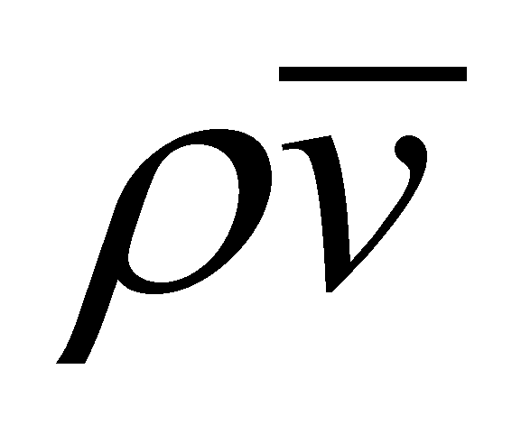
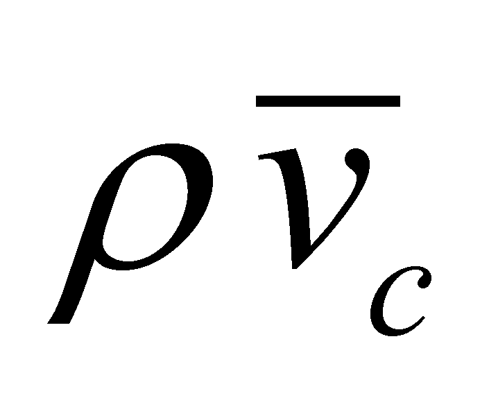
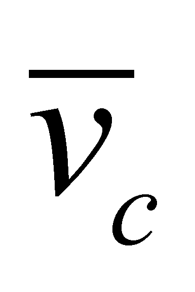

|
|
|
Definition 7.3.1: The state change of a MS produced as a result of the ingress and storage of an immergent flux (import flux, outer traflux) inside its real bounding surface is named action.
Definition 7.3.2: The flux which generates an action is named agent flux.
Let us consider the more simple case of a MS with a single type of stored flux (k=1), that is the kinetic flux (whose FDV is , where ρ is the mass density). Before the action of an outer flux (of the same kind), the system has a specific inner flux which is stored inside the inner volume defined by RBS, that is the source where the emergent (with losses) flux of MS is coming from. The flux which is stored inside MS has a specific state (defined both in the chapter focused on processes and in the chapter about fluxes), both against the inner reference of MS, and against an outer reference, state which will determine the behavior (motion types) of MS against the outer reference. If the internally stored flux has a common component, with FDV  against an outer reference, MS shall have a global motion of velocity , and if this common component is null, MS shall have an invariant position against the outer reference. At the moment of the incidence of an external flux (that is also kinetic) on RBS of MS, the component of this flux which is conveyed through RBS (outer traflux) shall be composed with the previously-existent inner flux, that is a composition of two vectorial fields, which will generate the new state of the stored flux.
This process of state variation is produced by strictly complying with the causality law, which means that the flux which is internally stored as a result of an action, shall be an effect (a result) of the existence and accumulation of the immergent (inflow) flux which is added to the previously stored flux. Consequently, an immergent flux (agent flux) shall produce first of all changes in the inner medium of MS (modification of the inner state) and then, an external state change (“visible” from the outside) shall take place. The outer state of MS is given by the common component of the individual states of MS elements, states which were modified as a result of this action (composition of the immergent flux with the previously stored flux).
Comment 7.3.1: For example, at the collision of two inert gas atoms (e.g.: neon gas), each atom which is moving is the equivalent with an open flux of constant effective section - the overall kinetic flux (impulse) - generated by the coherent T component (translation motion of the atomic inner T reference), which is the common component of all the motions of the atom’s inner elements. In other words, the translation motion with an even velocity is the outer state of the two atoms before the interaction occurrence. The two MS shall interact at the level of the atomic RBS made-up from the outer layers of the atomic electrons. Here, the two external incident fluxes shall be composed and decomposed according to the transfer rules by means of RBS, resulting pairs of incident, reflected and transmitted fluxes against the local reference (normal line and tangent plane at RBS in the impact zone of the two fluxes). Each flux conveyed to the inside of each atom, shall produce state changes first into the outer electronic medium (compression of the electronic medium from the impact area), and afterwards, it will change the state of the atomic kernels (followed by their motion towards the direction of the kinetic flux generated by this composition). The atoms ensemble shall be moving after the collision (the “visible” external change) just after the completion of these transitory flux transfer processes exerted on the entire atomic inner structure. Finally, the motion generated as a result of the atom’s collision interaction (the new fluxes resulted from the interaction process) shall be composed from two coherent kinetic fluxes (of the atoms after the collision). We have selected in this example two inert gas atoms due to regularity (spherical isotropy) of the electronic RBS for this kind of atoms, fact which simplifies the interaction process, the tangential components being reduced in this case (the equivalent of the elastic collisions between two balls).
If more external fluxes of the same kind exert a simultaneous impact on MS, the change of the external state shall be produced in the same way as the above-mentioned one, namely according to the direction of the common component of these fluxes (the resultant vector direction); if this common component is null (so-called equilibrium state), there is no external component which was generated for the output fluxes. Even maybe it is not necessary, we must remind that: in order to produce an action, the agent flux must be an open flux, whose flux lines would intersect RBS of the driven MS, and RBS to be permeable to that type of flux.
Definition 7.3.3: The material system which makes-up, or it is the source of the agent flux is named the agent object (or system).
Definition 7.3.4: The material system which is subjected to an action is named driven object (or system).
Any flux has a source - that is the stockpile - where it came from. As regards the emergent fluxes from MS (the ones who produce fields), the stock is represented by the fluxes internally stored. Since these emergent fluxes are open, they will be able to exert actions on the outer MS.
Definition 7.3.5: The mutual, bilateral process deployed between two MS whose emergent and identical fluxes are agent fluxes for the couple partner is named interaction.
Comment 7.3.2: The definition 7.3.5 contains the semantic value of the interaction notion in the “more sensitive” case of the remote interactions, through the fields generated by two MS. However, the same definition is also valid in case of the direct interactions (e.g.: by means of collision), therefore, we are dealing with a reciprocal flux exchange between two MS.
Definition 7.3.6: The two fluxes of the same type involved in the interaction process are named interactive fluxes.
Comment 7.3.3: Because it is always about a pair of fluxes, the utilization of the notion’s singular (that is interactive flux) does not make sense, so neither does the interaction notion when we are dealing with an isolated MS.
Therefore, there is a double and simultaneous action process deployed in the interaction process, in which each of the MS that is part of this couple is at the same time an agent object on its partner and object driven by the pair partner. Any interaction process, no matter how complex it is, may be decomposable in bilateral interactions between MS couples.
Comment 7.3.4 This way of defining the concepts of action and interaction, which is specific to the objectual philosophy allows a proper understanding of all the interaction types which are found in the real world, both regarding the “physical” interactions between the abiotic systems, and the informational interactions between the biotic systems, ending with the complex political, military, economic interactions deployed between the state systems or (why not?) between the planetary social systems. If the first interaction types (the “physical” ones) have almost exclusively the energy fluxes as agent fluxes, in case of the bio-systems and systems made-up from bio-systems, the interactions are generated both by the energy and structural fluxes, and mostly by the informational fluxes which are made-up from the information support systems (ISS which shall be minutely approached in chapter 8).
In the current language, there is a difference between the abiotic and biotic world also concerning the notion of state change as a result of an action. If within the abiotic field, this change meant the variation of a physical state attribute (motion, temperature, pressure, etc.), according to the biotic field, the successive, external, “visible” state variations of a bio-system (the driven object) make-up its behavior as a result (effect) of the agent flux action, behavior which is characterized both by the physical components (motions, form and temperature changes, etc.), and by psychic components (changes in the field of the information fluxes which are stored inside the bio-system’s IPS, which lead to changes of psychic state).
As for the “visibility” of the state change, the aspects are similar both for the abiotic MS and for the biotic MS: “visible” (observable by an outer IPS) may be considered those actions which produce changes in the efferent fluxes of the driven object, these fluxes being the unique support of the information on that particular object. There is also the additional request that the fluxes efferent to a MS to be included in the perception range of IPS, but all of these issues shall be minutely presented in chapter 8.
Copyright © 2006-2011 Aurel Rusu. All rights reserved.